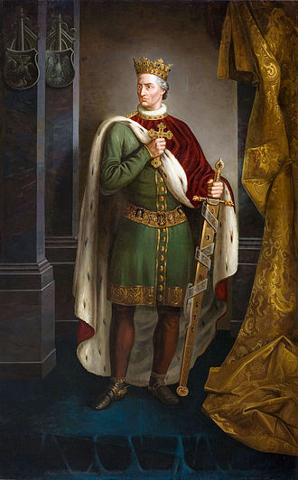
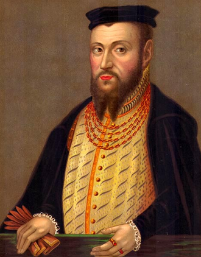
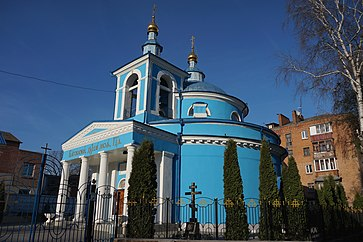

Назви
Хмельницький за всю історію мав декілька назв. У найдавнішому писемному свідченні про цей населений пункт він згадується як Ploskirowce (Плоскирівці). У пізніших документах місто згадується як Плоскирів. Найімовірніше, ця назва походить від назви річки Плоска, що неподалік від міста впадає у Південний Буг.
У 1795 році у складі Російської імперії було утворено Подільську губернію. У імператорському указі про її створення було згадано місто Проскурів як центр одного з повітів. Цей топонім дуже схожий на назву «проскура», тобто літургійний богослужбовий хліб.
16 січня 1954 року місто перейменоване на Хмельницький на честь Богдана Хмельницького і стало центром Хмельницької області.
Історія
Заснування
Територія, на якій розташований Хмельницький, була заселена ще в давні часи. Дослідження виявили в околицях міста чимало археологічних пам'яток. Зокрема, на схід від мікрорайону Лезневе — поселення з матеріалами доби бронзи 2-го тис. до н. е. та скіфського часу VII—III ст. до. н. е., у мікрорайоні Озерна — багатошарове поселення з матеріалами ранньої залізної доби І тис. до н. е., у мікрорайоні Дубове — поселення скіфського часу VII—III ст. до. н. е., у мікрорайонах Гречани та Озерна — поселення черняхівської культури VII—III ст. тощо. До наших днів збереглися кургани, які датуються археологами VII—III ст. до. н. е. (скіфський час) — один у мікрорайоні Виставка[6] та два на південний схід від мікрорайону Ракове.
Місто Хмельницький походить від невеликого поселення Плоскирів або Плоскирівці, час заснування якого невідомий. Перша достовірна згадка про Плоскирів (Плоскировець) міститься у привілеї, виданому великим князем Литовським і Руським та Королем Русі Владиславом ІІ Ягайлом в 1431 р. під час війни із іншим претендентом на великокнязівський престол — Свидригайлом Ольгердовичем. Відповідно до запису від 10 лютого 1431 року, зробленому у Сопоті, Владислав записав Янові Чанстуловському за 100 гривень право на володіння селами Голисин (нині село Олешин Хмельницького району) та Плоскирівці на річці Південний Буг у Летичівському повіті Подільської землі («… super villis Holissin et Ploskir о wcze super fluvio Boh iacentu in terra Podoliensi et districtum Latichoviensi sitas»).
Сучасне зображення Владислава II Ягайла
Цю найдавнішу на сьогодні писемну згадку про Хмельницький введено в науковий обіг завдяки дослідженням істориків. Ще у 1990-х роках Микола Петров — професор Кам'янець-Подільського університету, посилаючись на історика XIX ст. Михайла Орловського, висловив думку про існування Плоскирова у 1430-х роках XV ст. У 2000-х роках Сергію Єсюніну, співробітнику Хмельницького обласного краєзнавчого музею, вдалося відшукати в одному із томів «Архива Юго-Западной России» відомості про існування Плоскирова у 1434—1464 роках із перепосиланням на документи Литовської метрики. Сергій Миколайович звернувся до київського історика Віталія Михайловського із проханням зробити копії документів XV століття, в яких згадується Плоскирів. Єсюнін опублікував їх у книзі «Місто Хмельницький: історія, події, факти», а Віталій Михайловський — в «Українському археографічному щорічнику» (випуск 8/9). Саме з того часу поширилась інформація про нову дату найдавнішої згадки про місто — 1431 рік.
У складі Королівства Ягеллонів, Речі Посполитої та Османської імперії
Основний хід подій
У роки королювання (1434—1444 рр.) Владислава III Варненчика нова згадка — підтверджується право на володіння поселенням, яке вже названо як Ploskirów — Плоскирів.
Сигізмунд II Август
26 березня 1547 року польський король Сигізмунд II Август пожиттєво віддав Плоскирів у володіння кам'янецькому старості Мацею Влодеку. Він приділяв значну увагу зміцненню наявних та побудові нових фортифікацій у підвладних йому землях. Плоскирів був визначений ним як важливий стратегічний пункт. Вдале географічне розташування Плоскирова мало неабияке значення для його подальшого розвитку та зведенню у ньому замкових укріплень, які в ті часи виступали першоосновою для виживання населення під час нападів татар.
Наявність замку сприяло перетворенню Плоскирова у 60-х — 80-х pp. XVI ст. на міське поселення. У 1566 році стараннями Мацея Влодека Плоскирову було надане магдебурзьке право[7].
Під час Визвольної війни українського народу у 1648—1654 роках під проводом Богдана Хмельницького Плоскирів та його околиці опинились у центрі протидії козацьких та польських військ. Містечко неодноразово переходило з рук у руки, при цьому зазнавши великих руйнувань як від польських військ, так і від козацьких та повстанських загонів, і зрештою було спустошено.
1672 року Плоскирів, як і все Поділля, було окуповане Османською імперією. Плоскирів став центром окремої нахії, що підпорядковувалася Меджибізькому санджаку Кам'янецького єялету.
1699 року турки залишають Поділля. Плоскирів знову переходить до Польщі, і повертається у володіння Замойських. Плоскирівське староство виявилося повністю спустошеним, у зв'язку з чим Замойські переселяють сюди селян із польської Мазовії й мазурського Поозер'я. Так у Плоскирові та навколишніх селах (Гречана, Заріччя, Шаровечка) з'явилися «мазури», нащадки яких склали основу католицького населення згаданих пунктів[джерело?].
Згідно з переписом у 1789 році у Плоскирові було 184 дворів єврейських, 96 міщан тяглових та 126 бобилів і піших, прибуток з міста сягав 24 138 злотих. До староства належали села Гречани, Шаровечка, Мацьківці, Заріччя, Олешин, Іванківці та Лезнів. Місто та староство перебували у володінні Замойських. Населення Плоскирова не перевищувало 2,5 тисяч осіб, у ньому був шпиталь для убогих, калік та безпритульних, діяли (на середину 1780-х років) ткацький цех, об'єднані цехи бондарів і ковалів, кушнірів і кравців, а також шевців.
Плоскирівський замок
Втрачена фортифікаційна споруда у містечку Плоскирів. Точний час будівництва невідомий. Знаходився на острові, який утворювали річки Плоска та Бог. У XVI — XVII століттях був дерев'яним. Його розбудові у XVI столітті сприяв дідич Плоскирова Мацей Влодек. Мурований замок у Плоскирові будували за проєктом відомого італійського архітектора XVI століття Бернардо Морандо (приблизно у 1540—1600 роках). У кожного зодчого того часу був свій «фірмовий» стиль, який об'єднував всі його роботи. Був такий стиль й у Морандо. Отже, розглядаючи фортифікації, наприклад польського Замостя, які збереглися до наших днів, можна уявити й плоскирівські. Звичайно, вони були не такими масштабними, але те, що це була «фірмова» морандівська бастіонна фортеця — сумнівів не має. Підтвердження тому вдалося знайти на відомій карті середини XVII століття Гійома Левассера де Боплана (1595—1685). На ній Боплан позначив Плоскирів як «Urbs munita» — місто з укріпленнями.
Картограф, який вважався ще й відомим інженером та фортифікатором, наніс на карту чітке зображення озера з островом на місці впадіння Плоскої до Бугу, міст, що вів на острів, а також доволі докладно позначив п'ятикутні бастіонні міські фортифікації. Будувати плоскирівські фортифікації розпочали у 1589 році й завершили ймовірно лише на початку XVII століття. Тому, наприклад посол австрійського імператора Еріх Лясота, який проїжджав у 1594 році через Плоскирів, не згадує про них у своєму коротенькому описі міста. А от фризький мандрівник Ульріх фон Вердум на початку 70-х років XVII століття вже пише про те, що у Плоскирові серед озера був «чотирикутний острів, на якому, оточений валами й частоколами, стояв місцевий замок». Плоскирівські фортифікації та замок, які збудував Морандо, не збереглися. Після декількох руйнацій під час воєн від них вже до початку XIX ст. не залишилося й сліду. На карті міста 1800 року замку ми не бачимо взагалі, а від колишніх бастіонів позначені лише залишки валів. Та ще назва історичної частини міста — Завалля, нагадує про існування у минулому міських фортифікацій[8]. Мурований замок знаходився орієнтовно у квадраті вул. Вайсера — р. Південний Буг, вул. Кам'янецька — продовольчий ринок. Цей замок був оточений каналом із водою та зовнішнім виглядом міг нагадувати замок у польському Замості.
Незалежна Україна
У 1991 році хмельничани підтримали проголошення незалежної України. Хмельницький став на той час одним із найбільших у східній Європі торговельних центрів — нині тут діє цілий ринковий комплекс, який займає площу понад 18 га і включає 24 самостійних речових ринків.
23 січня 2014 року у Хмельницькому тисячі протестувальників пікетували Хмельницьку ОДА, обклавши її барикадами з мішків зі снігом, бочок із водою та старих автомобільних шин, з вимогою провести позачергову сесію, щоб ухвалити звернення до чинної влади із закликом припинити силове протистояння в Києві. Тим часом Хмельницька міська рада виступила проти законів, увалених «ручним голосуванням» у Верховній Раді України та поставила вимогу їх скасувати, притягти до кримінальної відповідальності осіб, винних у переслідуванні усіх учасників мирного протесту, а також підписати протягом 2014 року угоду про асоціацію України з ЄС[15]. 24 січня 2014 року відбулась позачергова сесія Хмельницької облради, на якій 60 із 62 депутатів проголосували за звернення до Президента та голови Верховної ради з вимогою відставки Кабміну, дострокових виборів Президента та Верховної ради, припинення переслідування учасників акцій протесту. Мітингувальники зайняли приміщення облради, незважаючи на опір працівників спецпідрозділу «Грифон» і застосування ними сльозогінного газу, та вимагали відставки голови держадміністрації Ядухи, однак той втік[16][17][18].
Релігія
Собор Різдва Пресвятої Богородиці
Місто має майже 600-річну історію і веде свій родовід від невеличкого поселення Плоскирів або Плоскирівці. Дата заснування міста не відома, а от що стосується першої згадки, то достовірно можна стверджувати про існування Плоскирова (Плоскировець) уже у першій половині XV ст. На той час Поділля було ареною суперечки між литовськими князями і польським королівством, яка закінчилася на користь останніх. Згадки XV століття свідчать про те, що Плоскирів тривалий час був невеличким населеним пунктом. Наступні триста років (1493 — 1793) Плоскирів, перебуваючи під польською владою, отримав статус містечка і виконував функції центру плоскирівського староства. Тривала польська колонізація краю, непростими були відносини між українцями і поляками, особливо в релігійній сфері. У XVII—XVIII століттях, після Люблінської унії, збільшилась чисельність переселенців із центру Польщі, Мазовії, мазурського поозер'я, Жешувського, Люблінського, Калецького, Краківського воєводств. Заселення поляками краю тривало і у XIX — на початку XX ст.
У процесі колонізації активну роль відігравав римо-католицький костел. З часом поляки становили більшість правлячої державної, релігійної, господарської верхівки. Це призвело до того, що навіть частина українців за походженням стали називати себе поляками, прийняли католицьку віру, запроваджували польську мову, звичаї, побут, обрядовість. Проводилось окатоличення населення, закривалися православні церкви, а кількість костелів у краї неухильно збільшувалась. Так, якщо в XIV ст. Їх було 2, в XV — 6, XVI — 7, у XVII — 14, то у XVIII ст. їх діяло вже — 46. Серед них був і костьол, розташований на місці сучасної школи № 1 нашого міста, але доля його склалася трагічно.
Римо-католицька церква мала велику кількість прекрасних костелів, які приваблювали до себе паству. Навпаки, занепад православних храмів та убогість духовенства не сприяли зростанню авторитету православ'я серед населення. Тому було видане розпорядження про будівництво соборів у містах приєднаного краю. На той час у Подільській губернії було лише два собори: Іоанно-Предтеченський у Кам'янці-Подільському і архієрейський у Барі. В краї відроджується православ'я, будуються монастирі, церкви, каплиці, серед них і собор Різдва Богородиці — найдавніший православний храм міста, розташований на самому початку вулиці Соборної, від якого вона і отримала свою назву.